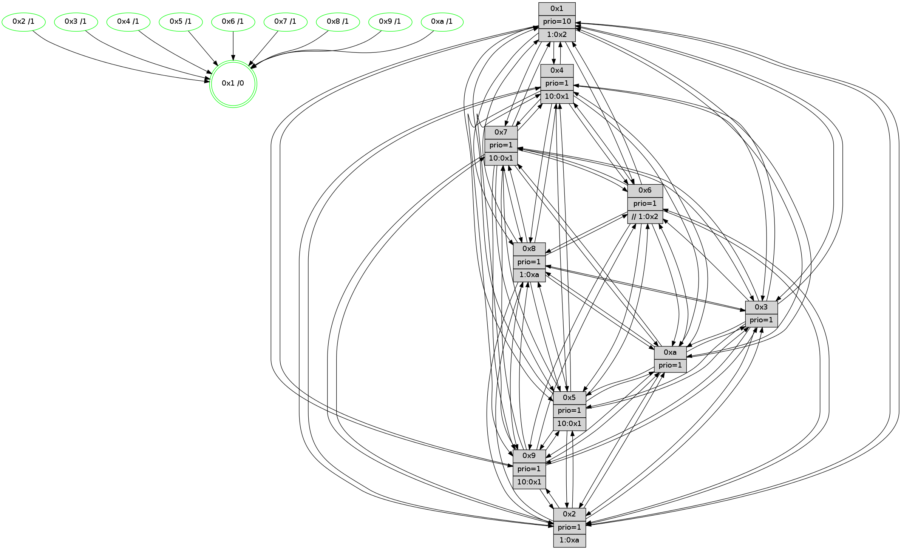

>> << IDX [start] -100 -25 -5 +0 +5 +25 +100 [1335.52245808]
 Previous packets
----------------------------------------------------------------------
1330.005546 beacon01(faad) #0 coord=01,02,03,04,05,06,07,0a,09,08 cycle=688.0ms assoc
-- color-indic=1 64 c7 45
1330.015529 beacon02(faad) #0 coord=01,02,03,04,05,06,07,0a,09,08 cycle=688.0ms assoc 64 54 74
1330.025529 beacon03(faad) #0 coord=01,02,03,04,05,06,07,0a,09,08 cycle=688.0ms assoc 64 2e 39
1330.035530 beacon04(faad) #0 coord=01,02,03,04,05,06,07,0a,09,08 cycle=688.0ms assoc 64 59 d3
1330.045529 beacon05(faad) #0 coord=01,02,03,04,05,06,07,0a,09,08 cycle=688.0ms assoc 64 23 9e
1330.055529 beacon06(faad) #0 coord=01,02,03,04,05,06,07,0a,09,08 cycle=688.0ms assoc 64 ad 49
1330.065531 beacon07(faad) #0 coord=01,02,03,04,05,06,07,0a,09,08 cycle=688.0ms assoc 64 d7 04
1330.075534 beacon0a(faad) #0 coord=01,02,03,04,05,06,07,0a,09,08 cycle=688.0ms assoc 64 a6 0f
1330.095534 beacon08(faad) #0 coord=01,02,03,04,05,06,07,0a,09,08 cycle=688.0ms assoc 64 52 95
1330.107963 [Hello(10): seq=781 sym=6,2,3,8,7,5,4,1 sysInfo=hasWarning stat=6:2,7,11,3/2:2,4,0,0/3:7,15,0,14/8:14,12,9,2/7:1,0,6,9/5:9,6,9,0/4:10,12,4,1/1:15,3,4,1]
1330.110543 [Color(1) seq=528 @0:0 prio=10 >1.@2,1.@3,1.@4,1.@5]
1330.112273 [STC(10)->1 #0.222 tree-change,inconsistent-stability,stable,to-color d=1]
1330.115158 [Color(5) seq=411 @0:0 prio=1 >10.@1,1.@6,1.@7,1.@8]
1330.119956 [Hello(7): seq=848 sym=2,3,5,6,4,8,9,10,1 sysInfo=hasWarning stat=2:1,15,14,3/3:10,5,15,3/5:7,14,6,2/6:1,14,13,11/4:4,10,2,0/8:14,0,7,0/9:4,14,5,1/10:2,8,9,6/1:3,0,8,0]
1330.122791 [STC(7)->1 #0.222 tree-change,inconsistent-stability,stable,to-color d=1]
1330.124048 [Hello(4): seq=848 sym=5,7,6,2,3,9,8,10,1 sysInfo= stat=5:2,11,0,1/7:11,4,3,2/6:15,3,6,14/2:6,12,0,0/3:13,13,8,14/9:15,4,9,1/8:13,12,10,1/10:12,4,12,14/1:10,7,11,1]
1330.126623 [Hello(9): seq=792 sym=2,5,3,4,7,6,8,10,1 sysInfo=hasWarning stat=2:4,0,10,10/5:9,11,12,7/3:7,5,3,3/4:2,8,14,1/7:4,15,1,4/6:4,7,9,13/8:3,14,13,4/10:2,2,0,4/1:5,9,12,1]
1330.130082 [Hello(8): seq=792 sym=5,2,3,7,9,6,4,10,1 sysInfo=hasWarning stat=5:4,11,2,0/2:14,6,6,12/3:7,9,9,3/7:0,3,1,1/9:9,5,4,4/6:10,8,7,15/4:4,9,2,0/10:15,14,7,4/1:15,10,11,0]
1330.132766 [STC(4)->1 #0.222 tree-change,inconsistent-stability,stable,to-color d=1]
1330.134066 [STC(9)->1 #0.222 tree-change,inconsistent-stability,stable,to-color d=1]
1330.136117 [Color(4) seq=387 @0:0 prio=1 >10.@1,1.@2,1.@3,1.@5]
1330.141930 [STC(8)->1 #0.222 tree-change,inconsistent-stability,stable,to-color d=1]
1330.143480 [Color(7) seq=376 @0:0 prio=1 >10.@1,1.@5,1.@6,1.@8]
1330.146571 [Color(8) seq=447 @0:0 prio=1 >1.@a]
----------------------------------------------------------------------
1330.793676 beacon01(faad) #0 coord=01,02,03,04,05,06,07,0a,09,08 cycle=688.0ms assoc
-- color-indic=1 64 03 4b
1330.803659 beacon02(faad) #0 coord=01,02,03,04,05,06,07,0a,09,08 cycle=688.0ms assoc 64 90 7a
1330.813657 beacon03(faad) #0 coord=01,02,03,04,05,06,07,0a,09,08 cycle=688.0ms assoc 64 ea 37
1330.823659 beacon04(faad) #0 coord=01,02,03,04,05,06,07,0a,09,08 cycle=688.0ms assoc 64 9d dd
1330.833657 beacon05(faad) #0 coord=01,02,03,04,05,06,07,0a,09,08 cycle=688.0ms assoc 64 e7 90
1330.843658 beacon06(faad) #0 coord=01,02,03,04,05,06,07,0a,09,08 cycle=688.0ms assoc 64 69 47
1330.853658 beacon07(faad) #0 coord=01,02,03,04,05,06,07,0a,09,08 cycle=688.0ms assoc 64 13 0a
1330.863662 beacon0a(faad) #0 coord=01,02,03,04,05,06,07,0a,09,08 cycle=688.0ms assoc 64 62 01
1330.883665 beacon08(faad) #0 coord=01,02,03,04,05,06,07,0a,09,08 cycle=688.0ms assoc 64 96 9b
1330.896519 [Hello(1): seq=758 sym=4,2,9,5,10,3,8,6,7 sysInfo=coloring-mode-on,ColoringModeRequestCalled stat=4:14,1,0,2/2:6,6,9,5/9:9,1,15,1/5:1,2,14,8/10:2,13,12,7/3:5,15,9,10/8:11,10,11,1/6:11,12,9,0/7:9,11,3,1]
1330.899551 [Color(10) seq=438 @0:0 prio=1]
1330.902186 [Hello(5): seq=849 sym=7,6,4,3,1,9,8,10,2 sysInfo=hasWarning stat=7:3,1,8,0/6:8,10,6,4/4:6,7,14,14/3:14,3,3,1/1:4,5,6,0/9:1,1,11,10/8:4,2,12,3/10:6,3,10,8/2:11,14,4,7]
1330.905772 [Hello(3): seq=849 sym=1,7,6,2,4,8,9,10,5 sysInfo=hasWarning stat=1:10,2,11,0/7:8,7,2,14/6:11,2,4,0/2:4,10,13,2/4:2,1,5,12/8:1,6,12,4/9:4,10,6,0/10:14,5,7,4/5:6,11,5,0]
1330.909226 [Color(3) seq=478 @0:0 prio=1]
1330.914357 [Color(9) seq=408 @0:0 prio=1 >10.@1,1.@5,1.@a]
1330.918923 [Color(2) seq=425 @0:0 prio=1 >1.@a]
----------------------------------------------------------------------
1331.581807 beacon01(faad) #0 coord=01,02,03,04,05,06,07,0a,09,08 cycle=688.0ms assoc
-- color-indic=1 64 bf 4e
1331.591789 beacon02(faad) #0 coord=01,02,03,04,05,06,07,0a,09,08 cycle=688.0ms assoc 64 2c 7f
1331.601791 beacon03(faad) #0 coord=01,02,03,04,05,06,07,0a,09,08 cycle=688.0ms assoc 64 56 32
1331.611791 beacon04(faad) #0 coord=01,02,03,04,05,06,07,0a,09,08 cycle=688.0ms assoc 64 21 d8
1331.621790 beacon05(faad) #0 coord=01,02,03,04,05,06,07,0a,09,08 cycle=688.0ms assoc 64 5b 95
1331.631791 beacon06(faad) #0 coord=01,02,03,04,05,06,07,0a,09,08 cycle=688.0ms assoc 64 d5 42
1331.641791 beacon07(faad) #0 coord=01,02,03,04,05,06,07,0a,09,08 cycle=688.0ms assoc 64 af 0f
1331.651796 beacon0a(faad) #0 coord=01,02,03,04,05,06,07,0a,09,08 cycle=688.0ms assoc 64 de 04
1331.671796 beacon08(faad) #0 coord=01,02,03,04,05,06,07,0a,09,08 cycle=688.0ms assoc 64 2a 9e
1331.684945 [Hello(10): seq=782 sym=6,2,3,8,7,5,9,4,1 sysInfo=hasWarning stat=6:2,8,11,3/2:2,5,0,0/3:8,0,0,14/8:15,13,10,2/7:2,1,7,9/5:10,7,9,0/9:0,1,1,0/4:11,13,5,1/1:0,3,4,1]
1331.688618 [Color(5) seq=412 @0:0 prio=1 >10.@1,1.@6,1.@7,1.@8]
1331.690338 [Hello(8): seq=793 sym=5,2,3,7,9,6,4,10,1 sysInfo=hasWarning stat=5:5,11,2,0/2:14,7,6,12/3:8,10,9,3/7:0,3,1,1/9:9,6,4,4/6:11,9,7,15/4:4,9,2,0/10:0,14,7,4/1:0,11,11,0]
1331.693152 [Color(8) seq=448 @0:0 prio=1 >1.@a]
1331.695932 [Hello(7): seq=849 sym=2,3,5,6,4,8,9,10,1 sysInfo=hasWarning stat=2:1,0,14,3/3:11,6,15,3/5:8,14,6,2/6:2,15,13,11/4:5,10,2,0/8:14,1,7,0/9:4,15,5,1/10:3,8,9,6/1:4,0,8,0]
1331.699259 [Hello(4): seq=849 sym=5,7,6,2,3,9,8,10,1 sysInfo= stat=5:3,11,0,1/7:11,5,3,2/6:15,3,6,14/2:7,13,0,0/3:14,14,8,14/9:15,5,9,1/8:13,13,11,1/10:13,4,12,14/1:11,7,11,1]
1331.704006 [Color(4) seq=388 @0:0 prio=1 >10.@1,1.@2,1.@3,1.@5]
1331.708232 [Color(1) seq=529 @0:0 prio=10 >1.@2,1.@3,1.@4,1.@5]
1331.713248 [Color(7) seq=377 @0:0 prio=1 >10.@1,1.@5,1.@6,1.@8]
----------------------------------------------------------------------
1332.369937 beacon01(faad) #0 coord=01,02,03,04,05,06,07,0a,09,08 cycle=688.0ms assoc
-- color-indic=1 64 8b 56
1332.379919 beacon02(faad) #0 coord=01,02,03,04,05,06,07,0a,09,08 cycle=688.0ms assoc 64 18 67
1332.389919 beacon03(faad) #0 coord=01,02,03,04,05,06,07,0a,09,08 cycle=688.0ms assoc 64 62 2a
1332.399918 beacon04(faad) #0 coord=01,02,03,04,05,06,07,0a,09,08 cycle=688.0ms assoc 64 15 c0
1332.409920 beacon05(faad) #0 coord=01,02,03,04,05,06,07,0a,09,08 cycle=688.0ms assoc 64 6f 8d
1332.419919 beacon06(faad) #0 coord=01,02,03,04,05,06,07,0a,09,08 cycle=688.0ms assoc 64 e1 5a
1332.429920 beacon07(faad) #0 coord=01,02,03,04,05,06,07,0a,09,08 cycle=688.0ms assoc 64 9b 17
1332.439924 beacon0a(faad) #0 coord=01,02,03,04,05,06,07,0a,09,08 cycle=688.0ms assoc 64 ea 1c
1332.459926 beacon08(faad) #0 coord=01,02,03,04,05,06,07,0a,09,08 cycle=688.0ms assoc 64 1e 86
1332.472751 [Hello(5): seq=850 sym=7,6,4,3,1,9,8,10,2 sysInfo=hasWarning stat=7:4,2,8,0/6:8,11,6,4/4:7,8,14,14/3:15,4,3,1/1:4,6,6,0/9:2,2,11,10/8:5,3,12,3/10:6,3,10,8/2:11,15,4,7]
1332.475806 [Hello(3): seq=850 sym=1,7,6,2,4,8,9,10,5 sysInfo=hasWarning stat=1:11,3,11,0/7:9,8,2,14/6:11,3,4,0/2:4,11,13,2/4:3,2,5,12/8:2,7,12,4/9:4,11,6,0/10:15,5,7,4/5:6,12,5,0]
1332.478821 [Color(10) seq=439 @0:0 prio=1]
1332.480716 [Color(9) seq=409 @0:0 prio=1 >10.@1,1.@5,1.@a]
1332.483560 [Color(3) seq=479 @0:0 prio=1]
1332.487105 [Hello(2): seq=846 sym=4,5,7,6,3,9,8,10,1 sysInfo=hasWarning stat=4:2,10,15,12/5:2,5,8,2/7:15,7,15,1/6:1,2,1,0/3:1,12,7,12/9:12,12,4,9/8:11,9,10,11/10:2,5,13,10/1:11,14,6,0]
1332.493267 [Color(6) seq=482 @0:0 prio=1 >>1.@2,1.@3,1.@4]
----------------------------------------------------------------------
1333.158068 beacon01(faad) #0 coord=01,02,03,04,05,06,07,0a,09,08 cycle=688.0ms assoc
-- color-indic=1 64 37 53
1333.168050 beacon02(faad) #0 coord=01,02,03,04,05,06,07,0a,09,08 cycle=688.0ms assoc 64 a4 62
1333.178051 beacon03(faad) #0 coord=01,02,03,04,05,06,07,0a,09,08 cycle=688.0ms assoc 64 de 2f
1333.188050 beacon04(faad) #0 coord=01,02,03,04,05,06,07,0a,09,08 cycle=688.0ms assoc 64 a9 c5
1333.198050 beacon05(faad) #0 coord=01,02,03,04,05,06,07,0a,09,08 cycle=688.0ms assoc 64 d3 88
1333.208051 beacon06(faad) #0 coord=01,02,03,04,05,06,07,0a,09,08 cycle=688.0ms assoc 64 5d 5f
1333.218052 beacon07(faad) #0 coord=01,02,03,04,05,06,07,0a,09,08 cycle=688.0ms assoc 64 27 12
1333.228057 beacon0a(faad) #0 coord=01,02,03,04,05,06,07,0a,09,08 cycle=688.0ms assoc 64 56 19
1333.248055 beacon08(faad) #0 coord=01,02,03,04,05,06,07,0a,09,08 cycle=688.0ms assoc 64 a2 83
1333.260545 [Hello(10): seq=783 sym=6,2,3,8,7,5,9,4,1 sysInfo=hasWarning stat=6:3,9,11,3/2:3,5,0,0/3:8,1,0,14/8:0,14,10,2/7:3,2,7,9/5:10,8,9,0/9:0,2,1,0/4:12,14,5,1/1:1,4,4,1]
1333.263267 [Color(5) seq=413 @0:0 prio=1 >10.@1,1.@6,1.@7,1.@8]
1333.265007 [Hello(7): seq=850 sym=2,3,5,6,4,8,9,10,1 sysInfo=hasWarning stat=2:2,0,14,3/3:12,7,15,3/5:8,14,6,2/6:3,0,13,11/4:5,10,2,0/8:14,1,7,0/9:4,0,5,1/10:4,9,9,6/1:4,0,8,0]
1333.267888 [Hello(9): seq=794 sym=2,5,3,4,7,6,8,10,1 sysInfo=hasWarning stat=2:5,2,10,10/5:10,12,12,7/3:7,6,3,3/4:3,10,14,1/7:5,1,1,4/6:4,8,9,13/8:4,0,14,4/10:2,2,0,4/1:6,10,12,1]
1333.271220 [Hello(8): seq=794 sym=5,2,3,7,9,6,4,10,1 sysInfo=hasWarning stat=5:6,11,2,0/2:15,8,6,12/3:9,11,9,3/7:1,4,1,1/9:10,7,4,4/6:11,10,7,15/4:5,10,2,0/10:0,15,7,4/1:0,12,11,0]
1333.274684 [Color(8) seq=449 @0:0 prio=1 >1.@a]
1333.276342 [Hello(4): seq=850 sym=5,7,6,2,3,9,8,10,1 sysInfo= stat=5:4,11,0,1/7:11,6,3,2/6:15,4,6,14/2:8,14,0,0/3:15,15,8,14/9:0,6,9,1/8:13,13,11,1/10:13,5,12,14/1:11,8,11,1]
1333.279171 [Color(4) seq=389 @0:0 prio=1 >10.@1,1.@2,1.@3,1.@5]
1333.287413 [Color(7) seq=378 @0:0 prio=1 >10.@1,1.@5,1.@6,1.@8]
1333.291159 [Color(1) seq=530 @0:0 prio=10 >1.@2,1.@3,1.@4,1.@5]
----------------------------------------------------------------------
1333.946199 beacon01(faad) #0 coord=01,02,03,04,05,06,07,0a,09,08 cycle=688.0ms assoc
-- color-indic=1 64 f3 5d
1333.956182 beacon02(faad) #0 coord=01,02,03,04,05,06,07,0a,09,08 cycle=688.0ms assoc 64 60 6c
1333.966180 beacon03(faad) #0 coord=01,02,03,04,05,06,07,0a,09,08 cycle=688.0ms assoc 64 1a 21
1333.976183 beacon04(faad) #0 coord=01,02,03,04,05,06,07,0a,09,08 cycle=688.0ms assoc 64 6d cb
1333.986183 beacon05(faad) #0 coord=01,02,03,04,05,06,07,0a,09,08 cycle=688.0ms assoc 64 17 86
1333.996184 beacon06(faad) #0 coord=01,02,03,04,05,06,07,0a,09,08 cycle=688.0ms assoc 64 99 51
1334.006181 beacon07(faad) #0 coord=01,02,03,04,05,06,07,0a,09,08 cycle=688.0ms assoc 64 e3 1c
1334.016189 beacon0a(faad) #0 coord=01,02,03,04,05,06,07,0a,09,08 cycle=688.0ms assoc 64 92 17
1334.036188 beacon08(faad) #0 coord=01,02,03,04,05,06,07,0a,09,08 cycle=688.0ms assoc 64 66 8d
1334.049358 [Hello(1): seq=760 sym=4,2,9,5,10,3,8,6,7 sysInfo=coloring-mode-on,ColoringModeRequestCalled stat=4:14,1,0,2/2:8,7,9,5/9:9,3,15,1/5:2,2,14,8/10:4,15,12,7/3:7,1,9,10/8:11,10,11,1/6:12,13,9,0/7:9,12,3,1]
1334.052088 [Hello(3): seq=851 sym=1,7,6,2,4,8,9,10,5 sysInfo=hasWarning stat=1:12,4,12,0/7:10,9,2,14/6:11,4,4,0/2:5,11,13,2/4:4,3,5,12/8:2,8,12,4/9:5,11,6,0/10:0,5,7,4/5:6,13,5,0]
1334.055211 [STC(3)->1 #0.223 tree-change,inconsistent-stability,stable,to-color d=1]
1334.056682 [Color(9) seq=410 @0:0 prio=1 >10.@1,1.@5,1.@a]
1334.059058 [Hello(2): seq=847 sym=4,5,7,6,3,9,8,10,1 sysInfo=hasWarning stat=4:3,11,15,12/5:2,6,8,2/7:0,8,15,1/6:1,3,1,0/3:1,12,7,12/9:13,12,4,9/8:11,10,10,11/10:3,5,13,10/1:11,15,6,0]
1334.061957 [Hello(6): seq=851 sym=2,5,4,7,9,8,10,1 sysInfo=hasWarning stat=2:2,4,0,0/5:12,1,15,3/4:15,13,3,7/7:14,10,12,15/9:10,15,10,10/8:12,1,5,5/10:10,5,15,12/1:8,15,9,1]
1334.064874 [Color(2) seq=427 @0:0 prio=1 >1.@a]
1334.066265 [Color(6) seq=483 @0:0 prio=1 >>1.@2,1.@3,1.@4]
1334.068620 [Color(3) seq=480 @0:0 prio=1]
1334.071687 [Hello(5): seq=851 sym=7,6,4,3,1,9,8,10,2 sysInfo=hasWarning stat=7:5,3,8,0/6:8,12,6,4/4:8,9,14,14/3:0,5,3,1/1:4,7,6,0/9:3,3,11,10/8:6,4,12,3/10:7,4,10,8/2:12,0,4,7]
1334.079176 [STC(10)->1 #0.223 tree-change,inconsistent-stability,stable,to-color d=1]
1334.081772 [Color(10) seq=440 @0:0 prio=1]
----------------------------------------------------------------------
1334.734329 beacon01(faad) #0 coord=01,02,03,04,05,06,07,0a,09,08 cycle=688.0ms assoc
-- color-indic=1 64 4f 58
1334.744310 beacon02(faad) #0 coord=01,02,03,04,05,06,07,0a,09,08 cycle=688.0ms assoc 64 dc 69
1334.754312 beacon03(faad) #0 coord=01,02,03,04,05,06,07,0a,09,08 cycle=688.0ms assoc 64 a6 24
1334.764312 beacon04(faad) #0 coord=01,02,03,04,05,06,07,0a,09,08 cycle=688.0ms assoc 64 d1 ce
1334.774312 beacon05(faad) #0 coord=01,02,03,04,05,06,07,0a,09,08 cycle=688.0ms assoc 64 ab 83
1334.784311 beacon06(faad) #0 coord=01,02,03,04,05,06,07,0a,09,08 cycle=688.0ms assoc 64 25 54
1334.794313 beacon07(faad) #0 coord=01,02,03,04,05,06,07,0a,09,08 cycle=688.0ms assoc 64 5f 19
1334.804316 beacon0a(faad) #0 coord=01,02,03,04,05,06,07,0a,09,08 cycle=688.0ms assoc 64 2e 12
1334.824318 beacon08(faad) #0 coord=01,02,03,04,05,06,07,0a,09,08 cycle=688.0ms assoc 64 da 88
1334.836821 [Hello(9): seq=795 sym=2,5,3,4,7,6,8,10,1 sysInfo=hasWarning stat=2:6,3,10,10/5:11,12,12,7/3:7,7,3,3/4:4,11,14,1/7:5,2,1,4/6:5,9,9,13/8:5,1,14,4/10:2,3,1,4/1:7,11,12,1]
1334.839521 [Hello(10): seq=784 sym=6,2,3,8,7,5,9,4,1 sysInfo=hasWarning stat=6:3,9,11,3/2:3,5,0,0/3:8,1,0,14/8:0,15,10,2/7:4,3,7,9/5:10,9,9,0/9:1,2,1,0/4:13,15,5,1/1:2,5,5,1]
1334.842864 [Color(1) seq=531 @0:0 prio=10 >1.@2,1.@3,1.@4,1.@5]
1334.845436 [Hello(7): seq=851 sym=2,3,5,6,4,8,9,10,1 sysInfo=hasWarning stat=2:3,1,14,3/3:13,8,0,3/5:9,14,6,2/6:4,1,13,11/4:5,10,2,0/8:14,1,7,0/9:4,1,5,1/10:5,10,10,6/1:5,1,8,0]
1334.848123 [Hello(4): seq=851 sym=5,7,6,2,3,9,8,10,1 sysInfo= stat=5:5,11,0,1/7:11,7,3,2/6:0,5,6,14/2:9,15,0,0/3:0,0,9,14/9:0,7,9,1/8:13,13,11,1/10:14,6,13,14/1:12,9,11,1]
1334.850935 [Color(7) seq=379 @0:0 prio=1 >10.@1,1.@5,1.@6,1.@8]
1334.852562 [Hello(8): seq=795 sym=5,2,3,7,9,6,4,10,1 sysInfo=hasWarning stat=5:7,11,2,0/2:0,9,6,12/3:10,12,10,3/7:1,5,1,1/9:10,8,4,4/6:12,11,7,15/4:6,11,2,0/10:1,0,8,4/1:1,13,11,0]
1334.856969 [Color(8) seq=450 @0:0 prio=1 >1.@a]
1334.862026 [Color(5) seq=414 @0:0 prio=1 >10.@1,1.@6,1.@7,1.@8]
1334.866532 [Color(4) seq=390 @0:0 prio=1 >10.@1,1.@2,1.@3,1.@5]